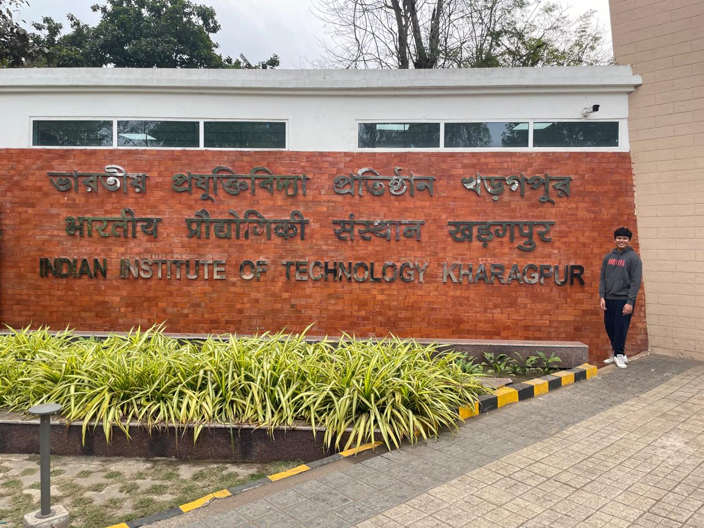

Featured & Recognised By
 Zee News
Sigma Xi
RSL Awards
IIT Kharagpur
Zee News
Sigma Xi
RSL Awards
IIT Kharagpur
Hey, I'm Aryaman.
I’m a 17-year-old from Gurgaon who loves mathematics. I explore its deeper questions, contribute to mathematical research, and build things that help other people learn and think about it.
Selected achievements

📰 Press Feature
Zee News: Shaping a bold future for math education in India
Featured in Zee News for efforts in transforming math education accessibility through AI platforms like HeyArya! and school-integrated NGO work.
🏆 People's Choice Award
Sigma Xi Student Research Showcase
Presented Can a Shape Hear Itself? — a year-long project on landscape functions — at Sigma Xi's international showcase (311 participants, 13 disciplines). Received the highest engagement in Sigma Xi history: 2,600+ likes, a grade of 47/50, and a $250 prize. Featured in the official Sigma Xi press release.
🥈 Ranked 2nd of 17K+
IIT Kharagpur Young Innovators
Ranked 1st in Junior Category, 2nd overall out of 17,000+ submissions. Defended a novel graph-theoretic Waste Classification CNN (94% accuracy) against DRDO faculty. Awarded $600 and invited to deploy the model with IIT faculty.
📖 arXiv preprint
Chandra-Jain Conjecture
A conjecture on the arithmetic degree of discrete landscape spectral coefficients, proven for small cases. Published on arXiv in August 2026 with Dr. Sudhir Ranjan Jain, IIT Delhi.
arXiv:2608.11372
🏫 NGO · 2 Patents Filed
Saksham — Assistive Technology NGO
Deployed low-cost assistive devices for the visually and hearing impaired. Filed patents: Wearable Communication Method (202611103628) and Wearable Assistive System (202611103635).
300+ students
Crest Gold Award
🏅 Recognition
Awards & Honours
• AP Scholar with Distinction
• RSL Guitar Grade 8: RockSchool (Issued Feb 2024)
Experience
NLP Game Developer & Founder · ELSEWHERE
Built an LLM-powered multiplayer game countering acute apophenia by forcing players to sever associative chains in real time, pioneered at YTS Plaksha University. Endorsed by 3 therapists and Fortis Hospital. 1,000+ plays across 15 countries.
YTS Fellow · Plaksha University
Selected from 2,500+ applicants into a cohort of 200 for a residential STEM program in robotics and AI. Chosen as 1-of-25 for advanced coursework in Combinatorics, Number Theory and Discrete Mathematics under Prof. Hanumant Singh (Northeastern/MIT-WHOI).
R&D Intern · Hero MotoCorp
Designed a piezoelectric gym floor concept with the Hero MotoCorp team; developed an MVP using plant materials and pitched to Head of Design, reporting ~30% efficiency over equivalent Western deployments. Granted exclusive access to Harley-Davidson plant; studied X440 and Hero Mavrick 440 engines.
AI Research Program · Inspirit AI
Built 4 full-stack ML systems (Breast tumor CNN, sentiment stock forecaster, YOLO v5 traffic pipeline, bias detection in LLMs) with MIT/Harvard/Brown researchers. Selected 1-of-3 for a specialized CTE head-injury detection fellowship using CNN architectures.
About
I began programming in the sixth grade in 2020. Shortly afterwards, I fell in love with mathematics, and since then I've been building things at the intersection of the two. Along the way, I spent countless hours every week under the tutelage of Dr. Saugata Ghosh, whose guidance helped shape my early understanding of mathematics. That experience made me appreciate how transformative good teaching can be, and it sparked my interest in making high-quality mathematics education more accessible through technology.
Whatever I've been able to accomplish so far is as much a reflection of the people who've supported me as it is of my own efforts. I'm deeply grateful to my parents, sister, grandparents, teachers, and the many mentors who've guided me along the way.
My thinking has been shaped by Richard Feynman, I. I. Rabi, Freeman Dyson, Steve Jobs, Peter Thiel, and Elon Musk, among many others. I enjoy reading, particularly biographies, history, and books at the intersection of science, technology, and philosophy.
I'm comfortable across Python, C++, Java, HTML/CSS/JavaScript, Verilog, Julia, and the Wolfram Language. Beyond programming, I write about mathematics, literature, and the unexpected paths that connect them.
Research has become one of the most rewarding parts of my journey. Much of my original work has been carried out in collaboration with Dr. Sudhir Ranjan Jain, including the Chandra-Jain Conjecture on discrete landscape functions.
Selected work
Chandra-Jain Conjecture
A conjecture on the arithmetic degree of discrete landscape spectral coefficients, with Dr. Sudhir Ranjan Jain.
Read more →Research
Spectral properties of discrete landscapes, the Arnold cat map, and the sagging string.
View papers →Education equity
HeyArya!, Live the Learning, and Saksham — tutoring, classrooms, and assistive technology.
See projects →